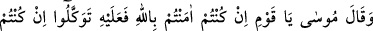
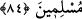

kavimlerinin eşrafından da korkuyorlardı. Çünkü eşraf, hem kendileri hem de genç
kuşak hakkında Fir’avn’un hışmından çekinerek bunların Musa’nın dinine girmelerini
engellemeye çalışıyordu. Âyetteki “ileri gelenler”den maksadın Fir’avn’un önde gelen
adamları olması da muhtemeldir.
et-Te’vîlâtü’n-Necmiyye’de şöyle denilir: “Kalb Musa’sına sadece kavminden bir
zürriyet îmân etti. Bu zürriyet, kalbin sıfatlarıdır. ‘Kavminden’ kelimesindeki zamirin
nefis Fir’avnuna râcî olması da caizdir. Şöyle ki kalb Musa’sına nefis Fir’avnunun
sadece bir kaç sıfatı îmân etti. Çünkü nefsin kötü huyları bazı güzel kalbî huylar
sayesinde değişebilir. Ama bu değişme Fir’avn ve adamlarından korka korka
gerçekleşir. Yani bu değişiklik nefis, heva, dünya ve dünyevi şehvetler Fir’avnlarının
nefsin yaratıldığı tabiî huylar ile bu kalbî huyları değiştirmesinden korka korka
gerçekleşir.
Bununla nefs-i emmarenin sıfatları her ne kadar mutmainneye dönüşse de
mutmainneden tekrar emmareliğe dönmesinden ve hilesinden emin olunamayacağına
işaret edilmektedir. Nitekim Bel’am ve Bersisa’nın durumu böyle olmuştur. Nefsin kötü
sıfatlarının kalbî huylara dönüşmesi ayrıca dünya ve şehevî isteklerle imtihan edilmek
suretiyle de akamete uğrayabilir ve nefis tekrar emmarelik vasfına geri döner.”
Hz. Şeyh-i Ekber (k.s.) Mevâkıu’n-nücûm’da şöyle der: “Vuslat konusunda iddiacı
olan kişinin alâmeti, nefsin sarhoşluğuna ve boş isteklerine geri dönmesidir. Bu
sebepledir ki meşâyıhın ileri gelenlerinden Ebu Süleyman Dârânî şöyle der: “Vâsıl
olsalardı geri dönmezlerdi.” Vuslattan ancak usulü kaybettikleri için mahrum
kalmışlardır. Güzel ahlâkla bezenmeyen henüz hakîkate ermemiştir. Gerçekten vâsıl
olanın alâmeti ise tabiatının özelliklerinden çıkmak, şeriata karşı edebli olmak ve seyr ü
sülûkü nereye varırsa varsın ona uymaktır.”
“Çünkü Fir’avn yeryüzünde çok ululanan” Mısır toprakları üzerinde yegane
hakimdi, mütekebbir, azgın “ve” zulümde, adam öldürüp kan akıtarak bozgunculuk
etmede yahut da kibirde ve azgınlıkta “çok aşırı gidenlerdendi.” Öyle ki rab olduğu
iddiasında bulunmuş, peygamber çocukları olan İsrailoğulları’nı köleleştirmişti. Çünkü
İsrailoğulları İbrahim oğlu İshak’ın oğlu Yakub’un torunlarındandır.
84. Musa dedi ki: “Ey kavmim, eğer Allah’a inandıysanız ve O’na teslim
olduysanız sâdece O’na tevekkül edin.”
“Musa” mü’minlerin Fir’avn’dan korktuklarını görünce “dedi ki: “Ey kavmim eğer
Allah’a inandıysanız” O’nu ve âyetlerini tasdik ettiyseniz, fayda vermenin de zararları